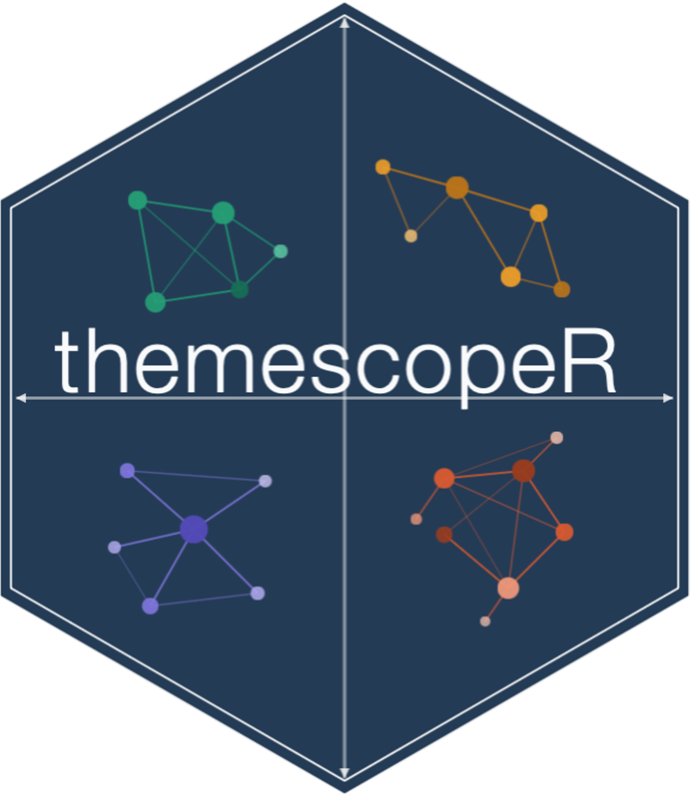

This page collects software, datasets, replication materials, and computational resources developed to support reproducible research in statistics, computational social science, text analytics, and science mapping.
deployed_codeSoftware
Open Packages & Scripts

PyEvoc
Python library for computational hierarchical evocation analysis of digital corpora, supporting corpus preparation, lexical indicators, EVOC quadrants, and visual outputs.

themescopeR
Computational framework for mapping thematic structures in large-scale discourse data through interpretable indicators, community detection, and visualisation.
database Data & Materials
Supporting Materials
-
Notebooks & Markdowns expand_more
Annotated notebooks and markdown documents supporting data preparation, statistical modelling, text mining, bibliometric workflows, and figure generation.
-
Documentation expand_more
Technical notes, methodological appendices, reproducibility guides, and supporting documentation describing analytical workflows.